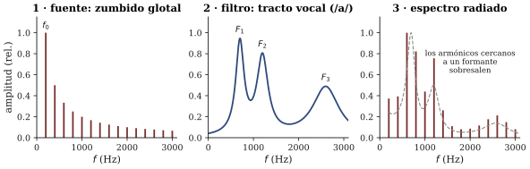

Capítulo 13 — La segunda cosecha (y el instrumento que lleva puesto)
Lectura previa a la sesión 13. Objetivos: preparación de la Prueba 2 (OA1.2, OA1.3, OA2.2, OA2.3, más la escucha escrita OA3.1) y anticipo de la voz cantada (OA1.3). Como el capítulo 7, este es más corto que los demás, a propósito: esta semana su energía va al estudio.
Otra semana distinta
La sesión 13 repite la asimetría de la sesión 07. El primer módulo completo es la Prueba 2, que cosecha el arco que va de la superposición de tonos (sesión 08) a la lutería en PVC (sesión 12). El segundo módulo es deliberadamente liviano, y tiene un privilegio que ninguna otra sesión tuvo: el instrumento que vamos a estudiar no hubo que traerlo ni comprarlo, porque cada uno lo lleva puesto.
Este capítulo acompaña esa asimetría: la primera mitad es un mapa para preparar la prueba; la segunda, el anticipo de la voz.
Primera mitad: cómo preparar la Prueba 2
Qué es (y qué no es) esta prueba
El formato es el que usted ya conoce de la Prueba 1: hasta 60 minutos, individual, de respuesta corta y estructurada, y suena — estímulos por el equipo de la sala en momentos anunciados (cada uno dos veces, más una pasada de repaso), una hoja de figuras para leer e interpretar, y una escucha escrita corta evaluada con la misma rúbrica de escucha argumentada del curso: describir, hipotetizar, proponer verificación, y distinguir lo que se oye de lo que se interpreta. No necesita calculadora: la aritmética es de proporciones y de sumas de cents — el semitono de 100 que la sesión 09 dejó instalado.
El temario es s08–s12, con dos reglas que conviene tener claras al estudiar. Primera: los recuadros opcionales “para ingeniería” de los apuntes no entran — siguen siendo opcionales. Segunda: lo de la sesión 12, que es lo más fresco, entra solo en versión básica — tubo abierto y cerrado, las proporciones v/2L y v/4L, y los saltos de registro. Lo que quedó como “apellido fino” o cultura general en esa sesión (la corrección de extremo y por qué todos los tubos salieron bajos, la frecuencia de corte de los agujeros, el debate del material) no se pregunta: fue el compromiso público del cierre de s12 y se cumple.
El mapa de los cinco capítulos
Del capítulo 8 quedó el recorrido que usted midió con sus propios oídos: al separar dos tonos desde el unísono, el batido contable se vuelve aspereza, la aspereza se parte en dos notas que rozan, y el rozamiento muere cuando la separación supera la banda crítica (~un tercio de octava en el rango medio). Y la moraleja doble: la rugosidad no está en el aire — nace cuando dos componentes excitan zonas superpuestas de la membrana basilar —, y la consonancia sensorial de un intervalo es la ausencia de rugosidad entre los parciales de las dos notas: por eso las razones simples (2:1, 3:2) suenan lisas y por eso el mismo intervalo se enturbia en el registro grave.
Del capítulo 9, la aritmética de la afinación: un intervalo es una razón de frecuencias, los intervalos se apilan multiplicando — o, en cents, sumando (semitono = 100, octava = 1200). La cuenta que no cierra: 12 quintas justas de 702 cents contra 7 octavas de 1200 — el sobrante de ~24 cents es la coma pitagórica, y los temperamentos son las maneras de repartir ese sacrificio. El temperamento igual estrecha cada quinta ~2 cents (se delata solo como un batido lento) y ensancha cada tercera mayor ~14 (esas sí muelen). Y la herramienta: el batido es el cronómetro del afinador — sin batido, intervalo justo; batido prescrito, intervalo temperado.
Del capítulo 10, el concepto puente del bloque: un sistema forzado responde con amplitud grande solo cerca de su frecuencia propia — resonancia —, y la curva de respuesta lo retrata: pico angosto = poco amortiguamiento = arranque lento y ping largo; pico ancho = mucho roce = arranca al tiro y muere al tiro. Son dos caras de la misma moneda, y conviene poder leerlas en una curva dibujada. De ahí mismo: impedancia (qué tan duro de mover es un sistema) y acoplamiento (el puente y la caja como transformadores entre la cuerda y el aire, con su compromiso inevitable: sonar más fuerte cuesta durar menos, porque la caja no agrega energía). Y la botella de Helmholtz que es dos resonadores en uno: soplada vibra el aire, golpeada vibra el vidrio — el agua sube una nota y baja la otra.
Del capítulo 11, la gramática de las oscilaciones auto-sostenidas: fuente de energía continua + válvula que la corta en porciones + resonador que gobierna a la válvula. En la cuerda frotada la válvula es la fricción (agarra fuerte, desliza débil) y el metrónomo lo pone la cuerda: por eso apretar el arco no sube la nota — cambia el timbre, y si se exagera, rompe el régimen en graznido. De regalo conceptual: la esquina de Helmholtz que viaja por la cuerda y el diente de sierra sobre el puente; la cadena cuerda→puente→tapa→aire que hace audible lo que la cuerda sola no puede.
Del capítulo 12, la versión soplada y en básico: la columna de aire es un resonador configurable; abierta en ambos extremos, su fundamental es v/2L y su serie está completa (por eso la flauta salta la octava); cerrada en un extremo, la fundamental baja a v/4L y quedan solo los armónicos impares (por eso el tubo tapado del taller — y el clarinete — saltan la docena). La válvula aquí es el propio chorro sobre el bisel, sin nada que pegue ni suelte.
Cómo estudiar (en este curso)
Los tres consejos del capítulo 7 siguen vigentes — estudiar con los oídos y con la app, rehacer los tickets de salida, practicar proporciones en voz alta — y esta vez tienen versión específica. Primero, reproduzca los recorridos: el barrido del unísono a la tercera (demo de s08), el ir y venir entre quinta justa y temperada (demo de s09), el hinchazón de la resonancia (demo de s10): son experiencias que usted ya vivió y que la prueba le pedirá describir y explicar, no adivinar. Segundo, hágase las preguntas cruzadas de la serie del objeto: ¿por qué su botella/tabla/cuerda respondió así en el mapa de resonancias?, ¿qué válvula tendría si quisiera sostenerle la nota? Tercero, practique la contabilidad de cents: 12 × 702 contra 7 × 1200; 24 repartido en 12; 400 contra 386 — todas son sumas y restas, y todas cuentan una historia musical.
Como autochequeo final, usted debería poder: leer una curva de respuesta diciendo cuál resonador dura más y cuál responde mejor fuera del pico; explicar el orden batido→rugosidad→dos notas con la membrana basilar; hacer la cuenta de la coma y decir qué sacrifica el temperamento igual y dónde se nota; predecir la nota de un tubo por su largo y su condición de extremos; distinguir la firma espectral de un tubo abierto y uno tapado; y llenar de memoria la tabla válvula/metrónomo de las familias vistas.
Segunda mitad: el instrumento que lleva puesto
Al salir de la prueba lo espera la tercera válvula del curso, y su ticket de salida de la sesión 12 ya la estaba rondando: cuando usted canta una vocal, ¿qué es lo que afina — la “cuerda” o el “tubo”?
Repasemos qué hay dentro. El aire sale de los pulmones en un flujo parejo — la fuente de energía continua, como el arco y como el soplo. En la laringe, ese flujo atraviesa los pliegues vocales (las “cuerdas vocales”, que de cuerdas tienen poco: son dos labios de músculo y mucosa). Cuando usted los junta y el aire pasa, se ponen a oscilar: se cierran, la presión los abre, el aire escapa en un soplido, se vuelven a cerrar — cientos de veces por segundo. Es exactamente la gramática de las sesiones 11 y 12: una válvula que corta el flujo continuo en porciones periódicas (Benade 1990, sec. 19.2). El zumbido que producen — rico en armónicos, áspero, nada musical — es la fuente.
Ese zumbido no sale directo al aire: atraviesa la garganta y la boca — el tracto vocal, un tubo blando de unos 17 cm en el adulto (valor estándar de la literatura fonética, típico de la voz masculina adulta; la voz femenina adulta promedia unos 14–15 cm) cuya forma usted cambia a voluntad con la lengua, la mandíbula y los labios. Y un tubo, usted lo sabe desde la sesión 10, tiene resonancias: zonas de frecuencia donde responde con ganas y zonas donde no. Las resonancias del tracto se llaman formantes, y actúan de filtro: de todo lo que la fuente ofrece, refuerzan lo que cae cerca de ellas y desatienden el resto (C&G cap. 12, pp. 471–496; ROS cap. 15).
Aquí viene la idea que ordena todo el módulo — el modelo fuente-filtro — y con ella una sorpresa que lo distingue de todo lo que el bloque C mostró hasta ahora. En el violín y en la flauta, el resonador gobierna a la válvula: la cuerda y la columna le imponen su metrónomo a la fricción y al chorro. En la voz, no: los pliegues fijan su frecuencia solos, con su tensión y su masa — como una cuerda que se afina con el músculo —, y el tracto se limita a filtrar lo que le llega. La fuente pone la altura; el filtro pone… otra cosa. ¿Qué cosa? Piense qué cambia en su boca — y qué no cambia en su garganta — cuando usted canta “aaa–eee–iii” en la misma nota.
Si sospecha que esa “otra cosa” es la vocal, va bien encaminado: a qué suena una /a/ frente a una /i/ es, físicamente, un patrón de formantes — dónde quedaron las dos primeras resonancias del tubo que usted moldeó. Pero el capítulo no le va a quitar los experimentos de la sesión. Quedan abiertas, para hacerlas en vivo con el espectrograma proyectado, tres preguntas: ¿qué se ve — y qué se deja de ver — si usted susurra las cinco vocales, sin que los pliegues vibren? ¿Cómo hace una cantante lírica para atravesar una orquesta completa sin micrófono? ¿Y por qué, en el registro más agudo de una soprano, hasta el público mejor entrenado deja de distinguir qué vocal está cantando? Las tres tienen la misma respuesta de fondo: fuente y filtro son socios independientes — y esa independencia tiene consecuencias que se oyen.

Preguntas que la sesión va a responder
- Cuando usted canta una vocal, ¿qué afina la “cuerda” y qué afina el “tubo” — y por qué puede cambiar una cosa sin tocar la otra?
- ¿Qué es un formante, y en qué sentido una vocal es un patrón de formantes?
- ¿Qué muestra el espectrograma de una vocal susurrada, donde hay filtro pero no hay fuente periódica?
- ¿En qué se parece la válvula de la voz a la fricción del arco y al chorro de la flauta — y en qué se distingue de manera fundamental?
- ¿Por qué las vocales se confunden en el registro agudo de una soprano, y qué hace el canto entrenado para sobrevivir a la orquesta?
Referencias del capítulo
- Benade (1990), cap. 19 (“The Voice as a Musical Instrument”), secs. 19.1–19.3 — la laringe como oscilador auto-sostenido y la transmisión por el tracto; secs. 19.4–19.5 se citan en la sesión (formante del cantante, sopranos). Fuente principal del módulo 2.
- Campbell & Greated (1987), cap. 12 (pp. 471–496) — aparato fonador, fuente glotal, resonancias del tracto y técnicas de cantantes entrenados: la lectura complementaria más completa.
- Rossing, Moore & Wheeler (2002), caps. 15 (secs. 15.1–15.9, fuente-filtro y formantes) y 17 (canto) — para quien quiera ejercicios y detalle adicional.
- Roederer (1997) — omite la voz (omisión declarada por el propio autor en su prefacio): esta semana la lectura alternativa en español no existe; los apuntes de la sesión cubren ese vacío.
- Para la prueba: los capítulos 8–12 de este mismo libro y sus apuntes, con las referencias que cada uno declara.
- Fant, G. (1960). Acoustic Theory of Speech Production. Mouton — referencia estándar para el largo típico del tracto vocal adulto (~17,5 cm en el modelo masculino de referencia).